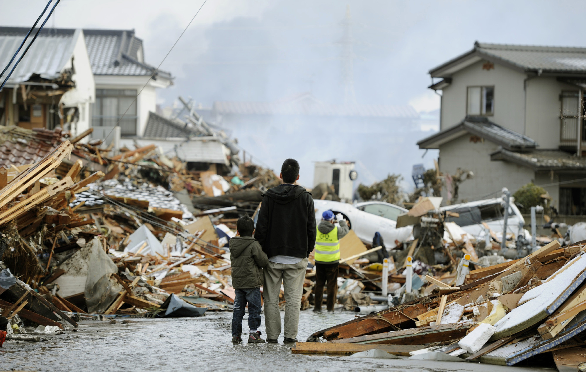

Дополнительный материал по учебным предметам "Допризывная Подготовка" и "ЗНТЧС".
На главную
Конспекты по "Допризывной подготовке"
Конспекты по "ЗНТЧС"
Темы ЗНТЧС:

Тема 1 - Введение
Тема 2 - Понятие чрезвычайной ситуации. Классификация чрезвычайных ситуаций.
Тема 3 - Законодательство РБ в области ЗНТЧС
Тема 4 - Гос. система ЧС
Тема 5 - ЧС природного характера
Тема 6 - ЧС техногенного характера
Тема 7 - Пожарная безопасность
Тема 9 - Ядерное оружие
Тема 9.1 - Химическое оружие
Тема 9.2 - Биологическое оружие
Тема 10 - Инженерная защита населения
Тема 11 - Ядерная и радиоционная безопасность. Промышленная безопасность.
Тема 12 - Радиационная, химическая и биологическая защита населения
Тема 13 - ПРАКТИЧЕСКОЕ Средства инд.защиты. Приборы РРи ДК, ХР
Тема 14-15 - ПРАКТИЧЕСКОЕ оказание первой медпомощи
Тема 18 - Оповещение населения о ЧС
Тема - ЗАКОН О ПБ ст.19,20,46
Тема - Защита населения и территорий от чрезвычайных ситуаций